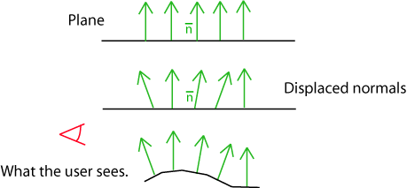
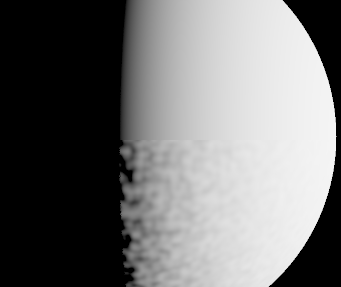
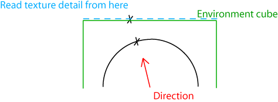
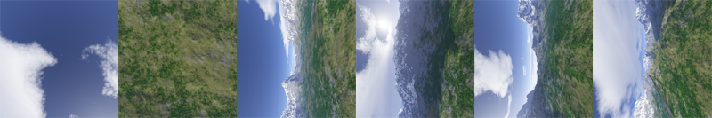
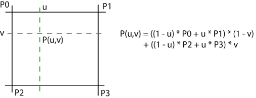
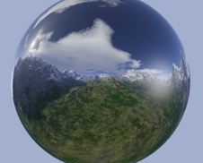
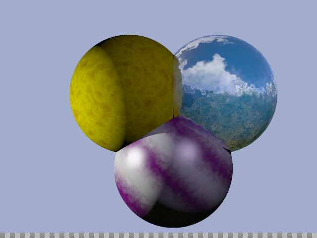

Textures
Maintenant que l'on a vu comment traiter les propriétés simples des surfaces, on va essayer de rajouter un peu de détail à tout ça. La manière la plus simple de rajouter des détails est l'utilisation de textures.
Je ne vais pas traiter du texturing en général avec toutes les difficultés associées mais je vais débuter en douceur par les textures procédurales et les textures d'environnement.
C'est la troisième partie de notre série d'articles sur le raytracing en C++. Elle fait suite à la partie intitulée "Supersampling et postprocessing".
Bruit de Perlin
Ken Perlin est l'un des pionners de l'imagerie de synthèse, il a participé à la création de films comme Tron et son fameux "bruit" est l'une des formules les plus utilisées dans le monde du graphisme. Le bruit de Perlin a une quantité de bonnes caractéristiques sur lesquelles je ne m'étendrai pas trop. Vous pouvez vous référer à son site pour plus d'infos: http://mrl.nyu.edu/~perlin/. C'est également sur cette page que vous pouvez trouver le code source de son bruit qui reste très simple. Voici la version adaptée en C++ directement traduite de la version originale en java :
{
int p[512];
perlin(void);
static perlin & getInstance(){static perlin instance; return instance;}
};
static int permutation[] = { 151,160,137,91,90,15,
131,13,201,95,96,53,194,233,7,225,140,36,103,30,69,142,8,99,37,240,21,10,23,
190, 6,148,247,120,234,75,0,26,197,62,94,252,219,203,117,35,11,32,57,177,33,
88,237,149,56,87,174,20,125,136,171,168, 68,175,74,165,71,134,139,48,27,166,
77,146,158,231,83,111,229,122,60,211,133,230,220,105,92,41,55,46,245,40,244,
102,143,54, 65,25,63,161, 1,216,80,73,209,76,132,187,208, 89,18,169,200,196,
135,130,116,188,159,86,164,100,109,198,173,186, 3,64,52,217,226,250,124,123,
5,202,38,147,118,126,255,82,85,212,207,206,59,227,47,16,58,17,182,189,28,42,
223,183,170,213,119,248,152, 2,44,154,163, 70,221,153,101,155,167, 43,172,9,
129,22,39,253, 19,98,108,110,79,113,224,232,178,185, 112,104,218,246,97,228,
251,34,242,193,238,210,144,12,191,179,162,241, 81,51,145,235,249,14,239,107,
49,192,214, 31,181,199,106,157,184, 84,204,176,115,121,50,45,127, 4,150,254,
138,236,205,93,222,114,67,29,24,72,243,141,128,195,78,66,215,61,156,180
};
static double fade(double t)
{
return t * t * t * (t * (t * 6 - 15) + 10);
}
static double lerp(double t, double a, double b) {
return a + t * (b - a);
}
static double grad(int hash, double x, double y, double z) {
int h = hash & 15; // CONVERT LO 4 BITS OF HASH CODE
double u = h<8||h==12||h==13 ? x : y, // INTO 12 GRADIENT DIRECTIONS.
v = h<4||h==12||h==13 ? y : z;
return ((h&1) == 0 ? u : -u) + ((h&2) == 0 ? v : -v);
}
double noise(double x, double y, double z) {
perlin & myPerlin = perlin::getInstance();
int X = (int)floor(x) & 255, // FIND UNIT CUBE THAT
Y = (int)floor(y) & 255, // CONTAINS POINT.
Z = (int)floor(z) & 255;
x -= floor(x); // FIND RELATIVE X,Y,Z
y -= floor(y); // OF POINT IN CUBE.
z -= floor(z);
double u = fade(x), // COMPUTE FADE CURVES
v = fade(y), // FOR EACH OF X,Y,Z.
w = fade(z);
int A = myPerlin.p[X ]+Y, AA = myPerlin.p[A]+Z, AB = myPerlin.p[A+1]+Z, // HASH COORDINATES OF
B = myPerlin.p[X+1]+Y, BA = myPerlin.p[B]+Z, BB = myPerlin.p[B+1]+Z; // THE 8 CUBE CORNERS,
return lerp(w, lerp(v, lerp(u, grad(myPerlin.p[AA ], x , y , z ), // AND ADD
grad(myPerlin.p[BA ], x-1, y , z )), // BLENDED
lerp(u, grad(myPerlin.p[AB ], x , y-1, z ), // RESULTS
grad(myPerlin.p[BB ], x-1, y-1, z ))),// FROM 8
lerp(v, lerp(u, grad(myPerlin.p[AA+1], x , y , z-1 ), // CORNERS
grad(myPerlin.p[BA+1], x-1, y , z-1 )), // OF CUBE
lerp(u, grad(myPerlin.p[AB+1], x , y-1, z-1 ),
grad(myPerlin.p[BB+1], x-1, y-1, z-1 ))));
}
perlin::perlin (void)
{
for (int i=0; i < 256 ; i++) {
p[256+i] = p[i] = permutation[i];
}
}
Matériaux procéduraux
On va utiliser le bruit de base, on peut lui appliquer une série de transformations pour créer de nouvelles textures en variations infinies.
Voici le code par exemple qui crée une texture turbulente en combinant des harmoniques du bruit de base:
{
for (int level = 1; level < 10; level ++)
{
noiseCoef += (1.0f / level )
* fabsf(float(noise(level * 0.05 * ptHitPoint.x,
level * 0.05 * ptHitPoint.y,
level * 0.05 * ptHitPoint.z)));
};
output = output + coef * (lambert * currentLight.intensity)
* (noiseCoef * currentMat.diffuse + (1.0f - noiseCoef) * currentMat.diffuse2);
}
break;
default:
{
output.red += lambert * currentLight.intensity.red * currentMat.diffuse.red;
output.green += lambert * currentLight.intensity.green * currentMat.diffuse.green;
output.blue += lambert * currentLight.intensity.blue * currentMat.diffuse.blue;
}
break;
Voici un exemple de code qui crée un effet de texture marbrée:
{
for (int level = 1; level < 10; level ++)
{
noiseCoef += (1.0f / level)
* fabsf(float(noise(level * 0.05 * ptHitPoint.x,
level * 0.05 * ptHitPoint.y,
level * 0.05 * ptHitPoint.z)));
};
noiseCoef = 0.5f * sinf( (ptHitPoint.x + ptHitPoint.y) * 0.05f + noiseCoef) + 0.5f;
output = output + coef * (lambert * currentLight.intensity)
* (noiseCoef * currentMat.diffuse + (1.0f - noiseCoef) * currentMat.diffuse2);
}
break;
Ces deux modèles modifient juste la couleur diffuse utilisée dans le modèle d'éclairage de Lambert. On peut imaginer qu'ils puissent contrôler bien plus que ça comme la transparence ou la couleur spéculaire. Ces exemples sont des bases que vous pouvez complexifier comme bon vous semble.
Ce qui est intéressant avec ces deux modèles c'est qu'ils sont intrinséquement 3D. Usuellement il y a des problèmes de mapping lorsque l'on veut texturer une sphère de manière correcte (ou tout autre objet un peu complexe) parce qu'en général les texture maps sont en 2D et ne sont pas naturellement proches de l'objet à texturer. La raison pour laquelle il est facile de passer en 3D avec des textures procédurales c'est que le coût de la troisième dimension n'en est pas vraiment un, alors que s'il avait fallu lire un fichier image et avoir la même résolution avec une texture en 3Dimension le coût en stockage mémoire aurait été prohibitif. Lorsqu'on ne peut pas utiliser de modèles procéduraux, ce qui est généralement le cas en temps réel ou lorsque la texture ne s'y prête pas (photo de la Terre, objet réel scanné etc..), on fait un spherical mapping pour des objets sphériques ou un UV mapping pour des objets complexes.
Bump mapping
Les textures procédurales ci dessus jouent sur la valeur du terme diffus de Lambert pour rendre des surfaces plus intéressantes, mais ce n'est pas le seul terme sur lequel on peut jouer. La forme la plus répandue de bump mapping consiste à modifier légèrement la normale à la surface par pixel afin de donner l'illusion que la géométrie est plus complexe qu'une surface simple. Modifier la direction du vecteur normal ne modifie pas la géométrie mais fait varier l'intensité lumineuse de telle sorte que l'on peut croire qu'il y a des bosses ("bumps") à la surface.

Le code suivant lit le niveau de bump dans le fichier scène et déplace la normale du modèle d'éclairage par un vecteur de "bruit de Perlin". Ensuite il faut renormaliser le vecteur obtenu et le réutiliser dans les équations d'éclairage.
Note : normaliser consiste à prendre le vecteur unitaire dans la même direction que le vecteur d'origine. Cela est nécessaire lorsqu'un vecteur qui est censé rester unitaire tout le temps est soumis à une transformation qui n'est pas une simple rotation. Pour cela il suffit de calculer la norme (longueur) du vecteur à normaliser, prendre l'inverse de cette norme et diviser chacun des membres du vecteur par cet inverse.
{
float noiseCoefx = float(noise(0.1 * double(ptHitPoint.x), 0.1 * double(ptHitPoint.y),0.1 * double(ptHitPoint.z)));
float noiseCoefy = float(noise(0.1 * double(ptHitPoint.y), 0.1 * double(ptHitPoint.z),0.1 * double(ptHitPoint.x)));
float noiseCoefz = float(noise(0.1 * double(ptHitPoint.z), 0.1 * double(ptHitPoint.x),0.1 * double(ptHitPoint.y)));
vNormal.x = (1.0f - currentMat.bump ) * vNormal.x + currentMat.bump * noiseCoefx;
vNormal.y = (1.0f - currentMat.bump ) * vNormal.y + currentMat.bump * noiseCoefy;
vNormal.z = (1.0f - currentMat.bump ) * vNormal.z + currentMat.bump * noiseCoefz;
temp = vNormal * vNormal;
if (temp == 0.0f)
break;
temp = invsqrtf(temp);
vNormal = temp * vNormal;
}
La sphère en haut de l'image utilise un éclairage de Lambert sans texture. La partie basse a ses normales qui varient selon un bruit de Perlin ce qui lui donne cet aspect bosselé. Si la lumière bougeait on verrait l'éclairage varier en temps réel.
Aucun nouveau détail géométrique n'a été ajouté ce qui fait que la silhouette de la sphère reste aussi lisse que sa version non bosselée !

Cubic environment mapping
Le mapping cubique est aussi une manière de mapper une sphère. (cf ce que l'on avait évoqué plus haut). A cet effet pour chaque point de la sphère on va associer une direction (du centre au point) et chaque direction va être amenée dans une partition de l'espace représentée par les faces du cube. En gros on va projeter le point depuis le centre sur la surface d'un cube environnant. Chaque face du cube est alors ramenée à une texture 2D classique.

Pourquoi un cube ? Les raisons sont multiples. La première est la simplicité de la création du cube d'environement. Il suffit en général de faire un rendu préalable d'un environnement virtuel dans six plans orthogonaux qui représentent les six directions du cube. La projection utilisée lors de la création est une perspective conique centrée au centre du cube (ou de la sphère virtuelle à mapper). La deuxième est l'efficacité du stockage qui ne déforme que peu les pixels par rapport à d'autres formes de mapping de la sphère. Il y a d'autres méthodes qui déforment encore moins comme le mapping parabolique mais qui ne sont pas mises en oeuvre aussi facilement et nécessite plus de calculs intermédiaires quand il s'agit de créer les texture ou de les lire.
Voici les six faces d'un cube d'environnement mis bout à bout:

Déterminer la face du cube à lire ne peut être fait qu'en énumérant les six cas possibles mais cela reste assez simple :
{
color * currentColor ;
color outputColor = {0.0f,0.0f,0.0f};
if(!cm.texture)
{
return outputColor;
}
if ((fabsf(myRay.dir.x) >= fabsf(myRay.dir.y)) && (fabsf(myRay.dir.x) >= fabsf(myRay.dir.z)))
{
if (myRay.dir.x > 0.0f)
{
currentColor = cm.texture + cubemap::right * cm.sizeX * cm.sizeY;
outputColor = readTexture(currentColor,
1.0f - (myRay.dir.z / myRay.dir.x+ 1.0f) * 0.5f,
(myRay.dir.y / myRay.dir.x+ 1.0f) * 0.5f, cm.sizeX, cm.sizeY);
}
else if (myRay.dir.x < 0.0f)
{
currentColor = cm.texture + cubemap::left * cm.sizeX * cm.sizeY;
outputColor = readTexture(currentColor,
1.0f - (myRay.dir.z / myRay.dir.x+ 1.0f) * 0.5f,
1.0f - ( myRay.dir.y / myRay.dir.x + 1.0f) * 0.5f,
cm.sizeX, cm.sizeY);
}
}
else if ((fabsf(myRay.dir.y) >= fabsf(myRay.dir.x)) && (fabsf(myRay.dir.y) >= fabsf(myRay.dir.z)))
{
if (myRay.dir.y > 0.0f)
{
currentColor = cm.texture + cubemap::up * cm.sizeX * cm.sizeY;
outputColor = readTexture(currentColor,
(myRay.dir.x / myRay.dir.y + 1.0f) * 0.5f,
1.0f - (myRay.dir.z/ myRay.dir.y + 1.0f) * 0.5f, cm.sizeX, cm.sizeY);
}
else if (myRay.dir.y < 0.0f)
{
currentColor = cm.texture + cubemap::down * cm.sizeX * cm.sizeY;
outputColor = readTexture(currentColor,
1.0f - (myRay.dir.x / myRay.dir.y + 1.0f) * 0.5f,
(myRay.dir.z/myRay.dir.y + 1.0f) * 0.5f, cm.sizeX, cm.sizeY);
}
}
else if ((fabsf(myRay.dir.z) >= fabsf(myRay.dir.x)) && (fabsf(myRay.dir.z) >= fabsf(myRay.dir.y)))
{
if (myRay.dir.z > 0.0f)
{
currentColor = cm.texture + cubemap::forward * cm.sizeX * cm.sizeY;
outputColor = readTexture(currentColor,
(myRay.dir.x / myRay.dir.z + 1.0f) * 0.5f,
(myRay.dir.y/myRay.dir.z + 1.0f) * 0.5f, cm.sizeX, cm.sizeY);
}
else if (myRay.dir.z < 0.0f)
{
currentColor = cm.texture + cubemap::backward * cm.sizeX * cm.sizeY;
outputColor = readTexture(currentColor,
(myRay.dir.x / myRay.dir.z + 1.0f) * 0.5f,
1.0f - (myRay.dir.y /myRay.dir.z+1) * 0.5f, cm.sizeX, cm.sizeY);
}
}
return outputColor;
}
cubemap
est une structure que j'ai
créée qui contient toutes les informations
nécessaires sur les six textures qui constituent le cube.
La lecture de la texture se fait de manière classique. Chaque point de la texture est identifié par un jeu de coordonnées entre 0 et 1. À chaque lecture la fonction read texture va lire les quatre couleurs les plus proches dans notre tableau de données et faire une simple interpolation linéaire entre ces quatre couleurs.
Rappel, pour quatre points P0, P1, P2, P3, l'interpolation bilinéaire en un point situé dans le carré est donné par la formule suivante :

Ce qui se traduit
dans notre code par la fonction readTexture
suivante:
{
u = fabsf(u);
v = fabsf(v);
int umin = int(sizeU * u);
int vmin = int(sizeV * v);
int umax = int(sizeU * u) + 1;
int vmax = int(sizeV * v) + 1;
float ucoef = fabsf(sizeU * u - umin);
float vcoef = fabsf(sizeV * v - vmin);
// la texture est adresse sur [0,1]
// le type d'adressage est la pour
// determiner comment on gere les
// coordonnées qui sont en dehors des bornes.
// par défaut on ramène ce qui est plus
// petit que zéro à zéro
// et ce qui est plus grand que un à un.
// (opérateur de saturation ou clamping)
// Clamping est le défaut pour les textures
umin = min(max(umin, 0), sizeU - 1);
umax = min(max(umax, 0), sizeU - 1);
vmin = min(max(vmin, 0), sizeV - 1);
vmax = min(max(vmax, 0), sizeV - 1);
// Ce qui suit est une interpolation bilinéaire
// selon les deux coordonnées u et v.
color output =
(1.0f - vcoef) *
((1.0f - ucoef) * tab[umin + sizeU * vmin]
+ ucoef * tab[umax + sizeU * vmin])
+ vcoef *
((1.0f - ucoef) * tab[umin + sizeU * vmax]
+ ucoef * tab[umax + sizeU * vmax]);
return output;
}
Pour simuler un environnement virtuel à partir d'une photo ou d'une image précalculée on va simplement aller voir dans la cube map quelle est la couleur associée pour tout rayon qui n'a pas touché de sphère. Un rayon qui part à l'infini qu'il soit parti de la caméra ou après plusieurs inter-reflexions va heurter une sphère d'environnement virtuelle qui est mappé en cubic mapping.
{
// On simule un environnement virtuel
// à partir d'une texture.
output += coef * readCubemap(myScene.cm, viewRay);
break;
}
Dans l'image suivante, on peut voir l'environnement soit directement (ce qui donne une couleur uniforme à cause de notre projection orthogonale), soit après une reflexion dans une sphère purement réflexive.

Digression : Le cubemapping ne déforme pas l'environnement. Si les faces du cube sont correctement calculées et à une résolution suffisante alors c'est une représentation parfaite d'un environnement situé à l'infini. meme si elle a besoin de trois coordonnées pour être adressée ce n'est qu'une image en 2D et bien entendu il y a des inconvénients. Cela veut dire qu'il n'y a pas de parallax. Si votre caméra se déplace dans l'espace l'environnement ne changera pas d'aspect en conséquence à moins de le recalculer avec un nouveau point de vue. Si vous êtes dans un espace clos cela se verra très vite par contre dans un espace ouvert avec une cubemap qui ne contient que les objets les plus lointains cela suffit (comme les nuages, les étoiles dans le ciel ou l'horizon). En pratique il faut juste vous assurer que les objets sont suffisamment lointains et que votre caméra ou vos objets réfléchissants ne se déplace pas trop rapidement par rapport à la plus grande dimension de la scène.
Annexe I : Auto exposition
On a vu au chapitre précédent comment faire une exposition photographique. Le problème c'est que la valeur de l'exposure est choisie à la main et hardcodée. Ce n'est pas très flexible donc on va plutot introduire une fonction d'exposition automatique. Le résultat n'est pas parfait mais il peut faire illusion pour un temps. Je me contente de donner le code.
{
#define ACCUMULATION_SIZE 256
float exposure = -1.0f;
float accufacteur = float(max(myScene.sizex, myScene.sizey));
accufacteur = accufacteur / ACCUMULATION_SIZE;
color mediumPoint = {0.0f, 0.0f, 0.0f};
const float mediumPointWeight = 1.0f / (ACCUMULATION_SIZE*ACCUMULATION_SIZE);
for (int y = 0; y < ACCUMULATION_SIZE; ++y) {
for (int x = 0 ; x < ACCUMULATION_SIZE; ++x) {
ray viewRay = { {float(x) * accufacteur,
float(y) * accufacteur, -10000.0f},
{ 0.0f, 0.0f, 1.0f}};
color currentColor = addRay (viewRay, myScene);
mediumPoint = mediumPoint + mediumPointWeight * (currentColor * currentColor);
}
}
// Code d'autoexposition, on place le carré moyen à une valeur de gris intermédiaire
float mediumLuminance = sqrtf(0.2126f * mediumPoint.red
+ 0.715160f * mediumPoint.green
+ 0.072169f * mediumPoint.blue);
if (mediumLuminance > 0.001f)
{
exposure = logf(0.6f) / mediumLuminance;
}
return exposure;
}
Annexe II : Correction de textures en lecture
Une texture comme notre cubic environment map est une source de lumière comme une autre est doit être controlée finement. Premièrement le stockage de notre texture se fait généralement après exposition (s'il s'agit d'une image 8 bits par canaux à précision fixe) et dans un espace sRGB (adapté à l'édition sur les écrans de PC et privilégiant les détails dans les faibles intensités). À l'inverse tous nos calculs d'éclairage se font dans l'espace linéaire des intensités. Tenir compte de ces éléments est primordial dans notre production d'images.
Chaque échantillon lu dans notre cubemap est donc corrigé de la manière suivante :
{
// On s'assure que les données sont ramenées dans un espace
// de représentation linéaire au préalable
outputColor.blue = powf(outputColor.blue, 2.2f);
outputColor.red = powf(outputColor.red, 2.2f);
outputColor.green = powf(outputColor.green, 2.2f);
}
if (cm.bExposed)
{
// Les images LDR ont déjà été soumis à la fonction d'exposition
// on les ramène à un espace similaire à l'espace de départ.
outputColor.blue = -logf(1.001f - outputColor.blue);
outputColor.red = -logf(1.001f - outputColor.red);
outputColor.green = -logf(1.001f - outputColor.green);
}
outputColor.blue /= cm.exposure;
outputColor.red /= cm.exposure;
outputColor.green /= cm.exposure;
Comme vous pouvez le voir cette conversion est l'opération inverse de ce qui se passe à l'écriture de notre fichier scène ce qui, me semble-t-il, est assez logique.
Voici le résultat du programme avec les notions abordées dans cette page :

Téléchargement du code source ici : raytrace_page3.zip Vous n'avez pas besoin de librairie particulière pour le compiler et le faire tourner, seulement un compilateur C++ livré avec la standard C++ library. Testé avec le compilateur de GCC 3.2 et visual C++ .net 2003.
Vous aurez aussi besoin des fichiers textures: textures.zip qui contient les fichiers associés à notre texture cubique par défaut utilisée dans nos images.
Direction page 4 : "Flou, Fresnel et Blobs".
Quick Navigation :
page
1 : "Premiers
pas".
page 2 : "Matériaux
spéculaires et post processing".
page
3 : "Textures".
page
4 : "Flou Fresnel et Blobs".
page
5 : "HDR loi de beer et aberration
chromatique".
page 6 : "Photon
mapping".
Plus d'articles et commentaires : Retour au journal.